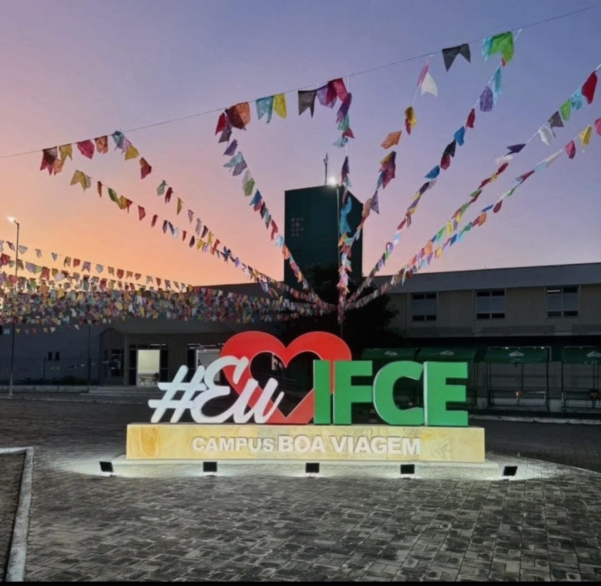
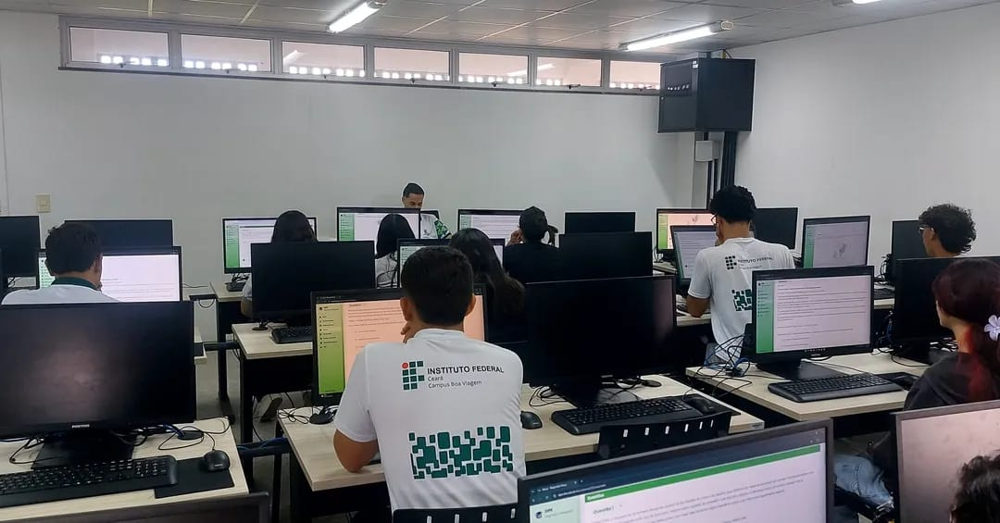
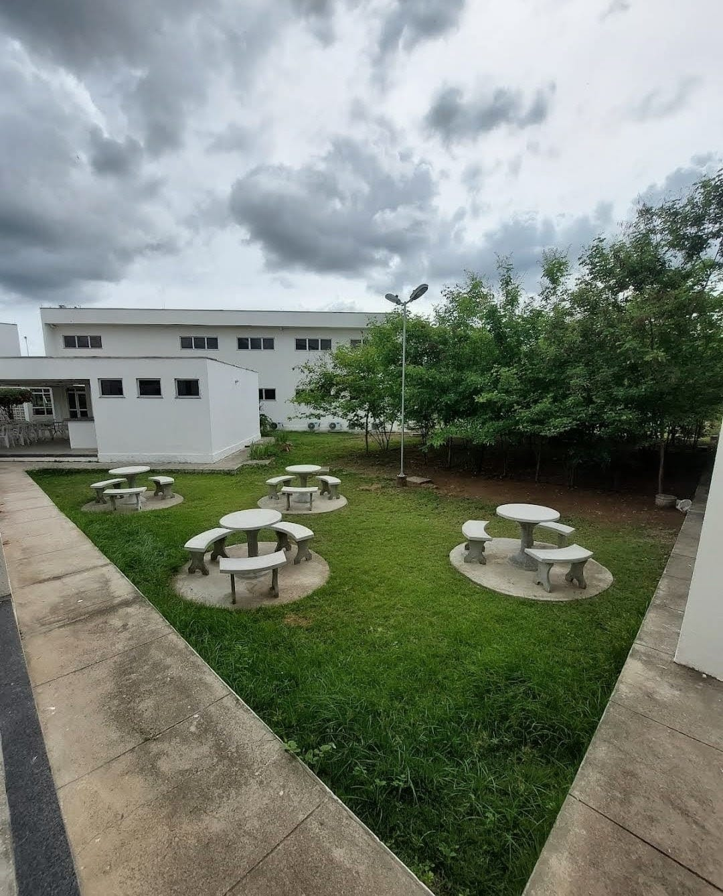
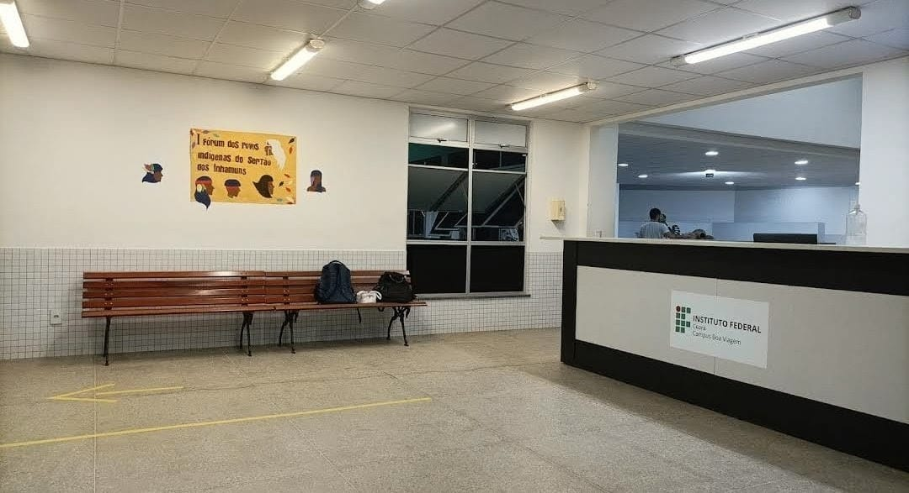

O Instituto Federal de Educação, Ciência e Tecnologia do Ceará — Campus Boa Viagem está localizado na cidade de Boa Viagem, no Sertão Central cearense. É uma referência regional em educação profissional, tecnológica e superior, oferecendo cursos de qualidade que integram ensino, pesquisa e extensão.


Equipamentos modernos para aulas práticas de programação, redes e banco de dados.
Acervo físico e digital, com espaços de estudo individual e em grupo.

Refeições subsidiadas para os estudantes da instituição.
Espaços para prática de esportes e atividades de extensão.
Local de eventos, palestras e defesas de trabalhos.
Cobertura em todo o campus para uso acadêmico.

Ambiente acolhedor para receber estudantes, visitantes e comunidade externa.